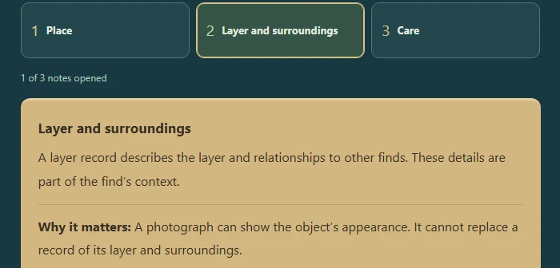
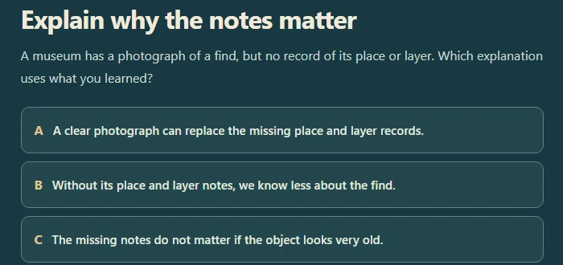
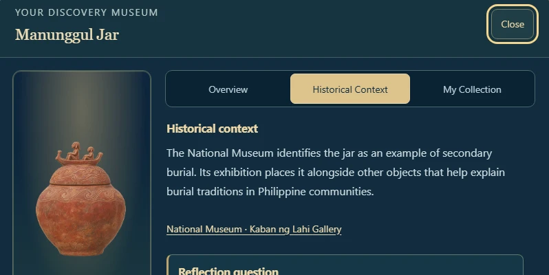
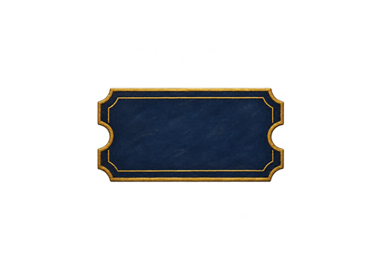

Start your journey.
Explore history with a student account or bring LakbayPanahon to your classroom.
Grade 5 learning
Follow illustrated stories, investigate clues, and discover what artifacts tell us about life in the Philippines long ago.
Read a story, use the evidence to answer a question, and connect what you learned to an artifact in the Discovery Museum.
Preview a lesson
Open a field note to see how the place where an object was found helps tell its story.

Choose the answer that fits the clues and get feedback on your reasoning.

Explore the Manunggul Jar and learn what the boat on its lid might tell us.
Try a clue
A museum has a photo of a clay pot. Which clue would tell you where it was found?
See how people across the Philippines lived, traded, and responded to change.
Barangay life, boatbuilding in Butuan, and early trade.
Magellan’s expedition, Lapulapu, and the Battle of Mactan.
The galleon trade and changes in work and schooling.
Local resistance and how reformers used writing to call for change.
Inside the Discovery Museum
Look closely at each object, then open its exhibit note to see what the details tell us.
Look for the two figures in the boat. That small carving is a clue to what the jar was made for.

The Manunggul Jar is a burial vessel from Palawan. The boat on its lid is connected to ideas about a journey after death.
Look along the hull for the edges of the wooden planks. Their joins are clues to how the boat was built.

The surviving planks of the Butuan boats give historians clues to the skills early Philippine communities used to build boats and travel by sea.
Find the rows of writing. The marks on the copperplate show one way people kept records.
The inscription is a written record dated to 900 CE. Historians can study it alongside objects such as tools and pottery to learn about the past.
For students
Resume a mission in My Journey, revisit a clue you saved, or practice a topic before your next lesson.
Save a clue during a lesson, then reopen it when you need evidence to explain your answer.

Check which chapters you’ve finished and see the stamps you’ve earned in My Journey.
Use your saved quiz and practice results to find topics worth revisiting, even after a mission is complete.
For teachers
Use LakbayPanahon to give your class a shared history mission and see where students may need help.

Create a student account to access the learning journey and save your progress. You can also preview a lesson without an account.
Log in to your student account, open My Class, and enter the class code your teacher gave you.
Yes. Create an account with your name, a username you choose, and a passphrase. Use your username to sign in. You can learn on your own or join a classroom later.
Yes. Use Listen in the sample mission to hear Bayani read the lesson. You can also follow along at your own pace.
Go to Log in and select Forgot Password? to request a reset link. Visit Student Account Help for more guidance.

Explore history with a student account or bring LakbayPanahon to your classroom.